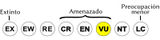
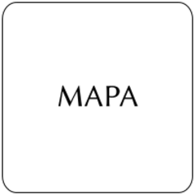

Voluta musica
| Caracol de pentagrama | |
|---|---|
| Riesgo de extinción | |
|  Vulnerable (UICN) | |
| Clasificación científica | |
| Reino: | Animalia |
| Filo: | Mollusca |
| Clase: | Gastropoda |
| Orden: | Caenogastropoda |
| Familia: | Volutidae |
| Género: | Voluta |
| Especie: | Voluta musica |
| Nombre binomial | |
|
Voluta musica Linnaeus, 1758 | |
| Distribución | |
|
 Mapa de distribución de Voluta musica | |
Contenido
Información de Evaluación
- Categoría y Criterio Regional: Vulnerable A2acde
- Fecha de Evaluación Regional: 2015
- Evaluadores: Jesús Morales-Campos y Ariany García-Rawlins
- Categoría y Criterio Global: No Evaluado
Justificación
Evaluaciones Previas
1999: Preocupación Menor (LC)
2008: Datos Insuficientes (DD)
Información General
Nombres comunes
Caracol pentagrama, common music volute.
Notas taxonómicas
Algunos autores mencionan dos subespecies, Voluta musica guineensis Dillwyn 1817 y Voluta musica typica [C1] Dall 1907.
Sinónimos
Voluta chorea Röding 1798. Voluta confusa Röding 1798. Voluta incarnata Röding 1798. Voluta laevigata Röding 1798. Voluta lineata Röding 1798. Voluta maculata Röding 1798. Voluta muta Röding 1798. Voluta reticulata Röding 1798. Voluta rosea Röding 1798. Voluta turbata Röding 1798. Voluta carneolata Lamarck 1811. Voluta fulva Lamarck 1811. Voluta sulcata Lamarck 1811. Voluta thiarella Lamarck 1811. Voluta tobagoensis var. guinaica Lamarck 1811. Voluta violacea Lamarck 1811. Voluta musica guineensis Dillwyn 1817. Voluta plicata Dillwyn 1817. Voluta nodulosa Lamarck 1822. Voluta musica typica Dall 1907. Voluta rugifera Dall 1907. Voluta tobagoensis var. damula Dall 1907. Voluta tobagoensis Verrill 1953.
Descripción
Voluta musica es un gasterópodo marino que puede alcanzar una longitud de hasta 10 cm; es de color rosáceo, salmón o anaranjado con bandas espirales de líneas y puntos de color marrón oscuro que semejan un pentagrama musical. Se encuentra en fondos arenosos de uno a cuarenta metros de profundidad. Es una especie gonocórica (sexos separados), de desarrollo directo, que adhiere sus ovicápsulas al substrato, usualmente en la parte interna de conchas vacías de bivalvos (como por ejemplo, Anadara sp., Atrina sp., Pinna sp.). Las cápsulas son esféricas y miden hasta 18 mm de diámetro basal. De tres a cinco embriones se resguardan dentro de cada cápsula, los cuales se alimentan del fluido intracapsular (Gibson-Smith 1973, Penchaszadeh y Miloslavich 2001).
Distribución
Voluta musica es una especie endémica del Caribe Sur. Su distribución abarca las Antillas Mayores, Menores y la costa norte de América del Sur hasta Surinam (Waever y Dupont 1970). En Venezuela está reportada en las ecorregiones de Paraguaná, Golfo Triste, Píritu-Tacarigua, Insular y de surgencia oriental (descritas por Miloslavich y Klein 2008). Las localidades en las que se ha encontrado en mayor abundancia son: Bajo Caimán y Boca Seca en el parque nacional Morrocoy (estado Falcón); playa Buche en Higuerote (estado Miranda); laguna de La Restinga y playa La Pared en la isla de Margarita, al igual que en las islas Caribe, Lobos y Coche (estado Nueva Esparta); Chacopata (estado Sucre); isla La Tortuga e isla Gran Roque (parque nacional archipiélago de Los Roques), ambas Dependencias Federales.
- Sistema: Terrestre y Marino
- Bioregión:
- Intervalo altitudinal (m):
- Endémica: No
Situación
En los últimos años, algunos parámetros de abundancia y distribución han sido estudiados en el noreste de la península de Araya. Los resultados indican que para un área de 200 km2, la densidad de Voluta musica es baja, entre 0,04 ind/m2 y 0,10 ind/m2 (Rangel et al. 2011, Peralta 2012). A diferencia de la mayoría de los gasterópodos del Caribe Sur, el caracol pentagrama tiene un ciclo estacional y la época reproductiva en la que se observan ovicápsulas en el campo va de mayo a noviembre. El número de ovicápsulas depositadas por hembra en cada evento de puesta es bajo (3 ±3 ovicápsulas/hembra/año). Desde el punto de vista histológico, la fecundidad medida en producción de oocitos maduros a lo largo de todo un año de seguimiento es también muy baja (Peralta et al. 2012). El desarrollo de esta especie es de tipo directo, es decir, sin fase larvaria. Cada ovicápsula contiene de uno a cinco huevos que se desarrollan en juveniles reptantes, los cuales al eclosionar pasan a formar parte de la comunidad del bentos. No ha sido evaluada a nivel global (IUCN 2014).
- EOO (km2): Temporalmente sin información
- AOO (km2): Temporalmente sin información
- Tendencia Poblacional: Desconocida
Amenazas
Voluta musica se encuentra sometida a varias amenazas. La primera es la colecta de su concha con fines comerciales, ya que por su belleza se cotiza muy bien en colecciones del mercado internacional. Es conocido que en la década de los ochenta los coleccionistas encargaban a los pescadores de la bahía de Puerto Francés, cerca de Higuerote (estado Miranda), lotes de conchas que luego se vendían en el extranjero a un precio de treinta dólares cada una. En esa época, la venta de diez conchas afuera pagaba el equivalente de un pasaje Caracas-Miami. Cuando las poblaciones del caracol pentagrama en esta bahía se redujeron de modo notable hasta casi agotarse, los coleccionistas comenzaron a buscarlas en la península de Araya, específicamente en Chacopata. En la colección malacológica del Museo de Ciencias Naturales de la Universidad Simón Bolívar existen registros tanto de individuos como de puestas en la década de los setenta y ochenta en Morrocoy (cayos Sombrero, Bajo Caimán y Punta Brava), Chacopata (isla Caribe), Puerto Cabello, Los Totumos (estado Miranda), Los Roques (cayo Dos Mosquises) y Mochima. En la actualidad, la especie está restringida a la ecorregión de surgencia oriental (Chacopata, isla de Margarita, Mochima, etc.) y prácticamente no se observa en las zonas de Higuerote y Morrocoy, lo que representa una reducción de su área de ocupación de sus 55.000 km2 iniciales a 18.900 km2, una contracción del 65%. La segunda amenaza se relaciona con el problema del imposex, una alteración sexual que implica, en las hembras, el desarrollo de genitales masculinos sobre los femeninos asociados con la presencia de compuestos químicos como el tributilestaño y/o el cobre, utilizados en las pinturas antiincrustantes para las embarcaciones. En el oriente de Venezuela, cerca de la localidad de isla Caribe, se ha encontrado que hasta 25% de los individuos están afectados, lo cual podría limitar su capacidad reproductiva (Peralta et al. 2012, Peralta et al. 2014). La tercera amenaza proviene de la pesca. En el oriente del país, la pesca artesanal de la pepitona (Arca zebra) resulta en la captura incidental de individuos de V. musica. Entre febrero y abril de 2011, durante nueve faenas de pesca, se capturó un total de 2410 individuos y por cada noche de pesca, se extrajeron en promedio 95 ejemplares (Peralta et al. 2012). El 40,23% de las hembras y el 22,16% de los machos retenidos incidentalmente estuvieron por debajo de la talla mínima de madurez gonadal (Peralta et al. 2012). Estas amenazas, sumadas al tipo de reproducción con desarrollo directo, que hace imposible la renovación de la población con individuos provenientes de otras localidades menos afectadas, convierten a este caracol en una especie muy vulnerable a extinciones locales.
Conservación
Actualmente no existe ningún plan de manejo para la conservación de la especie. Se recomienda establecer zonas o áreas protegidas para las poblaciones locales donde se haya registrado alta actividad reproductiva (Peralta et al. 2012). Se sugiere acoplar las épocas de veda de la pesca de pepitona con los períodos reproductivos de V. musica descritos para el noreste de la península de Araya (Peralta et al. 2012, Peralta 2012). También es aconsejable hacer estudios sobre el estado poblacional en otras regiones del país.
Autorías
Autores originales
Ana Carolina Peralta y Patricia Miloslavich
Colaboradores
Ilustrador
Pigmalion's Workshop
Referencias
- Gibson-Smith, J. (1973). The genus Voluta (Mollusca, Gastropoda) in Venezuela with description of two species. Geos 20: 65-73.
- IUCN (2014). The IUCN Red List of Threatened Species. Version 2014.3. Accesible en www.iucnredlist.org.
- Miloslavich, P. y Klein, E. (2008). Ecorregiones marinas del Caribe Venezolano. En: Klein, E. (Ed.). Prioridades de PDVSA en la conservación de la biodiversidad en el Caribe Venezolano. Petróleos de Venezuela, Universidad Simón Bolívar, The Nature Conservancy. Venezuela, 72 pp.
- Penchaszadeh, P. y Miloslavich, P. (2001). Embryonic stages and feeding substances of the South American volutid Voluta musica (Caenogastropoda) during intracapsular development. American Malagolocial Bulletin 16: 21-23.
- Peralta, A. C. (2012). Ecología, reproducción y amenazas potenciales concernientes a Voluta musica (caenogastropoda-volutidae) en el noreste de la Península de Araya, Venezuela. Tesis doctoral, Universidad Simón Bolívar. Caracas, Venezuela.
- Peralta, A. C. y Miloslavich, P. (2015). Caracol pentagrama, Voluta musica. En: J.P. Rodríguez, A. García-Rawlins y F. Rojas-Suárez (eds.) Libro Rojo de la Fauna Venezolana. Cuarta edición. Provita y Fundación Empresas Polar, Caracas, Venezuela. Recuperado de: animalesamenazados.provita.org.ve/content/caracol-pentagrama Vie, 23/02/2018 - 09:16
- Peralta, A. C., Miloslavich, P. y Bigatti, G. (2012). Comparación de la abundancia, estructura de tallas y fecundidad de Voluta musica (Caenogastropoda: Volutidae) en tres sitios de la costa norte de la Península de Araya, Venezuela. Revista de Biología Tropical 60(1): 165-172.
- Peralta, A. C., Miloslavich, P. y Bigatti, G. (2014). Imposex en Voluta musica (Caenogastropoda: Volutidae) en el Noreste de la Península de Araya, Venezuela. Revista de Biología Tropical 62(2): 523-532.
- Rodríguez, J. P. y Rojas-Suárez, F. (1999). Libro Rojo de la Fauna Venezolana, segunda edición. PROVITA, Fundación Polar. Caracas. 444 pp.
- Rodríguez, J. P. y Rojas-Suárez, F. (Eds.) (2008). Libro Rojo de la Fauna Venezolana, tercera edición. Provita y Shell Venezuela, S. A. Caracas, Venezuela. 364 pp.